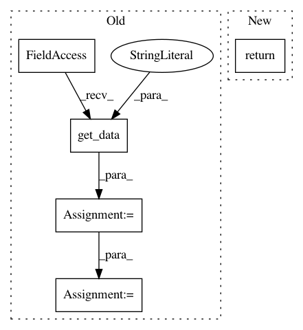

f2c6d6e6a15a574ddff55b8eaa291ed86f867859,src/python/twitter/pants/tasks/jvm_tool_bootstrapper.py,JvmToolBootstrapper,get_jvm_tool_classpath,#JvmToolBootstrapper#Any#Any#,24
Before Change
def get_jvm_tool_classpath(self, key, java_runner=None):
Get a callback to resolve the targets previously registered under the key.
callback_product_map = self._products.get_data("jvm_build_tools_classpath_callbacks") or {}
callback = callback_product_map.get(key)
if not callback:
raise TaskError("No bootstrap callback registered for %s" % key)
return callback(java_runner=java_runner)
After Change
Returns a list of paths.
return self.get_lazy_jvm_tool_classpath(key, java_runner)()
def get_lazy_jvm_tool_classpath(self, key, java_runner=None):
Get a lazy classpath for the tool previously registered under the key.
In pattern: SUPERPATTERN
Frequency: 3
Non-data size: 5
Instances
Project Name: pantsbuild/pants
Commit Name: f2c6d6e6a15a574ddff55b8eaa291ed86f867859
Time: 2014-01-08
Author: benjy@foursquare.com
File Name: src/python/twitter/pants/tasks/jvm_tool_bootstrapper.py
Class Name: JvmToolBootstrapper
Method Name: get_jvm_tool_classpath
Project Name: pantsbuild/pants
Commit Name: ed2b7179100e2d1b8a14e96429989136d5449d87
Time: 2019-07-12
Author: 1862202+wiwa@users.noreply.github.com
File Name: src/python/pants/backend/jvm/tasks/scalafix.py
Class Name: ScalaFix
Method Name: _compute_classpath
Project Name: pantsbuild/pants
Commit Name: 8a656213dceaceb0588fc61c8f9d5ffd633990bf
Time: 2015-04-17
Author: benjyw@gmail.com
File Name: src/python/pants/backend/jvm/tasks/jvm_tool_task_mixin.py
Class Name: JvmToolTaskMixin
Method Name: tool_classpath